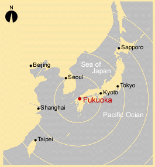
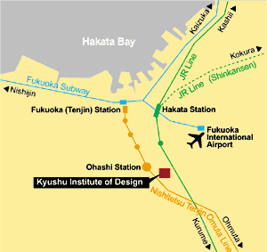
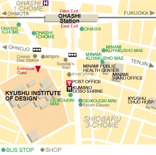
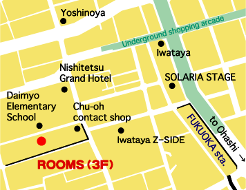

|
4-9-1, Shiobaru Minami-ku, Fukuoka-shi, 815-8540, Japan
telephone : +81 92 553 4407
URL : http://www.kyushu-id.ac.jp/
|
Fukuoka in Japan
Kyushu Institute of Design is situated in Fukuoka. The city is in Kyushu, the southern part of JAPAN.
|
 |
| |
|
Fukuoka city traffic
1.From Fukuoka(Tenjin) Station :
Take Nishitetsu Railway (Tenjin- Omuta Line), from Fukuoka (Tenjin) Station to Ohashi Station, then 5 minutes' walk.
2.From JR Hakata Station (JR Line):
Take 47 or 48 Bus, from Hakata Station Bus Stop to Kyushu Institute of Design Bus Stop, then 3 minutes' walk.
Take the Underground (Fukuoka Subway), from Hakata Station (Fukuoka Subway) to Tenjin Station, then Nishitetsu Rail-way (from Fukuoka (Tenjin) Station to Ohashi Station).
Taxi (20 minutes).
3.From Fukuoka Airport:
Take the Underground (Fukuoka Subway), from Fukuoka Airport Station to Tenjin Station, then Nishitetsu Railway(from Fukuoka (Tenjin) station to ohashi station.
Taxi (30 minutes).
|
 |
| |
|
Ohashi town detail
5 minutes' walk from OHASHI Station.
|
 |
|
|
|
cafe galleria 3F, 2-1-50, Daimyo Chuou-ku, Fukuoka-shi, 810-0041, Japan
telephone : +81 92 751 0075
URL : http://saito-kikaku.co.jp/rooms/
|
Fukuoka city traffic
1.From Fukuoka(Tenjin) Station
10 minutes' walk from Fukuoka(tenjin) Station.
|  |
|
©2002, FREQ Executive Committee.
|